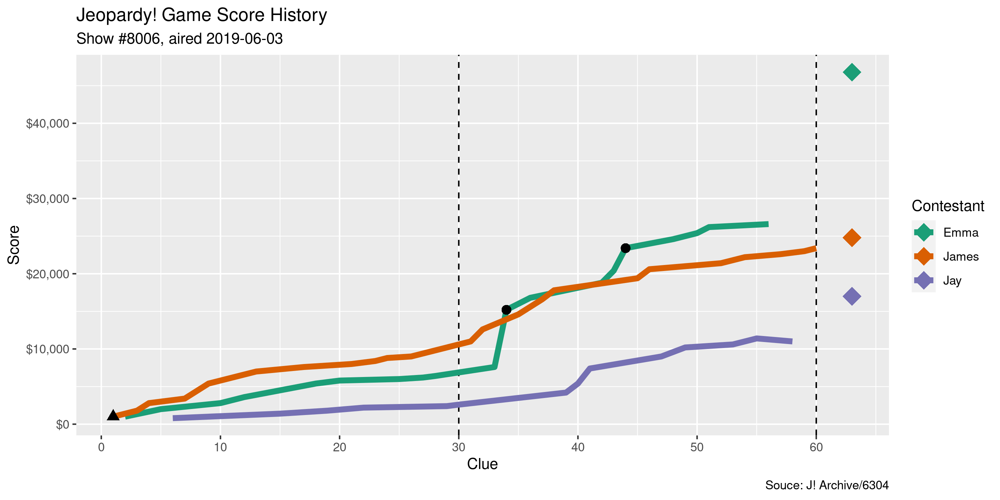

This R package was made to facilitate the analysis of game show data by scraping the J! Archive.
What is… whatr?
Installation
You can install the development version of ‘whatr’ from GitHub with:
# install.packages("remotes") remotes::install_github("kiernann/whatr")
Usage
The whatr_*() functions take one of four inputs to find the appropriate game on the J! Archive:
- An HTML document object from
whatr_html()or similar. - The numeric, non-sequential game ID.
- The sequential show number, as character starting with
#. - The date an episode originally aired, as
yyyy-mm-dd.
library(whatr) page <- whatr_html("2019-06-03") whatr_board(page)[, 5:7] #> # A tibble: 61 x 3 #> category clue answer #> <chr> <chr> <chr> #> 1 Picture The I… For An Optimistic View Of Things, Take A Look Through These Rose-Colored Glasses #> 2 Picture The I… If You Have These, It Means You're Well-Organized Your Ducks In A Row #> 3 Picture The I… It's What's Going On Here Comparing Apples & … #> 4 Picture The I… Greenhouse Gas Emission Due To Human Activity Leaves Behind… A Carbon Footprint #> 5 Picture The I… Note The Lovely Weather; It Means To Take Advantage Of An O… Make Hay While The … #> 6 Literature Melville's 'Bartleby The Scrivener' Is Subtitled 'A Story O… Wall Street #> 7 Literature In A 1923 Book By Kahlil Gibran, Almustafa Is This Mystical… The Prophet #> 8 Literature In 'Charlotte's Web', Templeton Is This Creature A Rat #> 9 Literature In A Novel Simone De Beauvoir Depicted Herself As Anne & Th… (Albert) Camus #> 10 Literature The Title Peak Of This Thomas Mann Novel Is Home To A Swiss… Magic Mountain #> # … with 51 more rows whatr_scores(6304) #> # A tibble: 63 x 5 #> round i name score double #> <int> <int> <chr> <int> <lgl> #> 1 1 1 James 1000 TRUE #> 2 1 2 Emma 1000 FALSE #> 3 1 3 James 800 FALSE #> 4 1 4 James 1000 FALSE #> 5 1 5 Emma 1000 FALSE #> 6 1 6 Jay 800 FALSE #> 7 1 7 James 600 FALSE #> 8 1 8 James 1000 FALSE #> 9 1 9 James 1000 FALSE #> 10 1 10 Emma 800 FALSE #> # … with 53 more rows whatr_plot("#8006")

Data
Included in this package is data on the 217 episodes of the show’s 35th season.
whatr::episodes #> # A tibble: 217 x 3 #> game show date #> <int> <int> <date> #> 1 6096 7816 2018-09-10 #> 2 6097 7817 2018-09-11 #> 3 6098 7818 2018-09-12 #> 4 6099 7819 2018-09-13 #> 5 6101 7820 2018-09-14 #> 6 6102 7821 2018-09-17 #> 7 6103 7822 2018-09-18 #> 8 6105 7823 2018-09-19 #> 9 6106 7824 2018-09-20 #> 10 6107 7825 2018-09-21 #> # … with 207 more rows whatr::synopses #> # A tibble: 651 x 6 #> game name final coryat right wrong #> <int> <chr> <int> <int> <int> <int> #> 1 6096 Rick 20200 18000 23 2 #> 2 6096 Isaac 5200 6400 11 4 #> 3 6096 Caitlin 8800 7800 13 3 #> 4 6097 Rick 29199 17400 24 2 #> 5 6097 Lori 34401 14800 20 2 #> 6 6097 Becky 3200 3200 9 3 #> 7 6098 Lori 17201 14200 18 0 #> 8 6098 Kyle 28401 17200 21 3 #> 9 6098 Monica 8400 6000 14 5 #> 10 6099 Kyle 9599 16000 20 3 #> # … with 641 more rows
The ‘whatr’ project is released with a Contributor Code of Conduct. By contributing to this project, you agree to its terms.
The J! Archive is created by fans, for fans. The Jeopardy! game show and all elements thereof, including but not limited to copyright and trademark thereto, are the property of Jeopardy Productions, Inc. and are protected under law. This package is not affiliated with, sponsored by, or operated by Jeopardy Productions, Inc or the J! Archive itself.